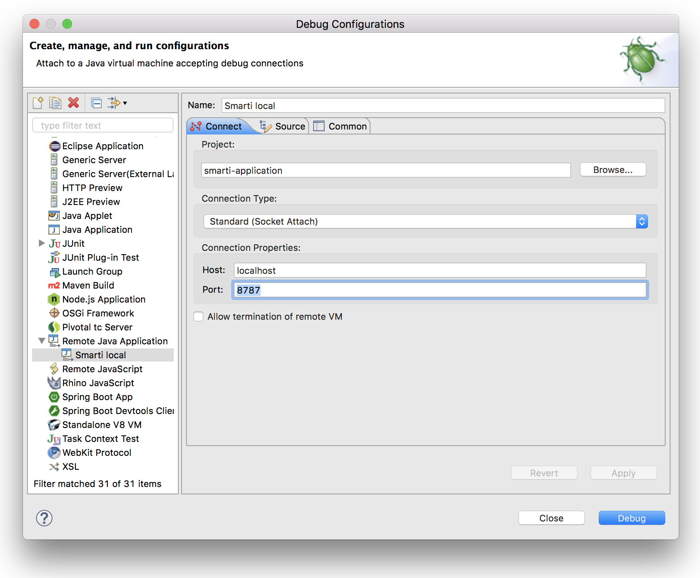

Smarti is a service component for conversational data. It allows to classify conversation intents, extract entities using natural language components and makes this data actionable via turning it into queries for an extendable set of endpoints. In addition Smarti is able to store conversations and thus suggest similar historic conversation flows for new messages.
This document is written for developers, operators and administrators who like to
-
debug, change and contribute Smarti code,
-
run Smarti on a local machine,
-
deploy Smarti on a server and
-
help Smarti get a better application.
All interested can convince themselves of the documentation quality. And if you caught fire, maybe you will become a Smarti developer very soon ;-)
| @all if you find typos, missing sections or if you have any other kind of helpful advice to improve this documentation or Smarti in general, please let us know. Share your thoughts and open an issue right here. The Smarti community will help you along, as fast as possible. |
Smarti Guide Overview
How to install
Installation packages are provided for Debian- and RedHat-based systems, and as Docker Image.
All packages are available from the download area.
Older versions can be found in the release archive.
Alternatively the application can be started by directly launching the executable jar:
$ java -jar smarti-${smarti-version}-exec.jarCheck out a detailed Smarti Installation Guide including system requirements.
How to configure
The Smarti Configuration is done on two levels:
-
Since Smarti is a Java application based on the Spring Framework, global application configurations are made using the
application.propertiesfile. Read the Application Configuration section to get an overview of Smarti’s numerous configuration options. -
Smarti is a multi-client capable system. Therefore each client has its own configuration. Client configurations can be manage with Smarti’s Admin User Interface. Alternatively, you can also use the client configuration API to manage your client’s configurations.
How to integrate
Through Smarti’s conversational RESTful-API it can be seamlessly integrated into any Chat-based communication platform. To learn how to integrate Smarti into chat applications, read the Conversational API section.
For the time being, Smarti works with Rocket.Chat conversations, where it can be seamlessly integrated via an RC plugin. For more information, see the Rocket.Chat adapter API description.
How to troubleshoot
In some cases, Smarti will not do what you expect it to do. You may have encountered a problem that is already known. In the Smarti Troubleshooting Guide you will find solutions for known problems and learn how to get to the bottom of the cause in an unexpected error situation.
How to develop
Smarti is a Java-Application based on the Spring Framework.
The application uses MongoDB as database and Apache Solr as search engine.
After checking out the sources from GitHub and installing the build components (ruby, ruby-sass, ruby-compass) a build can be executed as simple
$ mvn clean install [ -Pdeb | -Prpm ]Read the Developers Guide to become a Smarti developer.
How to contribute
Smarti is an Open Source project so everyone is encouraged to improve it. Don’t hesitate to report bugs, provide fixes or share new ideas with us. Use the issue tracker or send a pull request. To learn more about contributing and how to become a Smarti commiter, read the Smarti Contribution Guide.
Smarti Installation Guide
The Smarti installation guide is written for developers, operators and administrators who like to run Smarti on a server, as professional service or in production.
System requirements
Server sizing
-
DualCore-CPU (> 2GHz)
-
4GB RAM
-
2GB temporary Storage
Operating systems
-
Debian (e.g. Ubuntu 16.04. LTS)
-
Red Hat (e.g. Red Hat Enterprise Linux 7)
-
Amazon (e.g. Amazon Linux 2017.03)
System components
| Ensure your platform / environment running Smarti on fulfills these system requirements. |
|
Additional components & Stanford CoreNLP |
General recommendations
Run Smarti as a service in production
Installation packages are provided for Debian- and RedHat-based systems. As Smarti is a Spring Boot application it can be started by directly launching the executable jar:
$ java -jar smarti-${smarti-version}-exec.jar
To run Smarti in production it is recommended to deploy the deb or rpm package on your target environment instead executing the jar directly.
If you like to setup your development client or a non-productive server read section Build and Run explains how to do start Smarti by executing the executable jar.
|
Run MongoDB as a dedicated service
In a production scenario it is absolutely recommended to run MongoDB on a dedicated system.
If you like to run MongoDB on the same machine as the Smarti application 4 GB RAM are insufficient.
A developer client should have at least 8 GB RAM.
|
Deploy / Install
Deploy with Docker
$ docker run -d --name mongodb mongo
$ docker run -d --name smarti --link mongodb:mongo -p 8080:8080 redlinkgmbh/smartiThe provided docker-image does not contain some required (GPL-licensed) dependencies. To build a contained image, use the following snippet:
$ docker build -t smarti-with-stanfordnlp -<EOF
FROM redlinkgmbh/smarti
USER root
ADD [\
"https://repo1.maven.org/maven2/edu/stanford/nlp/stanford-corenlp/3.8.0/stanford-corenlp-3.8.0.jar", \
"https://repo1.maven.org/maven2/edu/stanford/nlp/stanford-corenlp/3.8.0/stanford-corenlp-3.8.0-models-german.jar", \
"/opt/ext/"]
RUN chmod -R a+r /opt/ext/
USER smarti
EOFDeploy on Debian
$ sudo dpkg -i ${smarti-source}/dist/target/smarti_${smarti-build-version}.debDeploy on Red Hat
$ sudo rpm -i ${smarti-source}/dist/target/smarti_${smarti-build-version}.rpmInstalling Additional Components
To install additional components, e.g. Stanford-NLP, add the respective libraries into the folder /var/lib/smarti/ext.
Stanford-NLP can be installed using the following command:
$ wget -P /var/lib/smarti/ext -nH -nd -c \
https://repo1.maven.org/maven2/edu/stanford/nlp/stanford-corenlp/3.8.0/stanford-corenlp-3.8.0.jar \
https://repo1.maven.org/maven2/edu/stanford/nlp/stanford-corenlp/3.8.0/stanford-corenlp-3.8.0-models-german.jarChanging the User
When installed using one of the provided packages (deb, rpm), smarti runs as it’s own system user smarti. This user is created during the installation
process if it does not already exists.
To run smarti as a different user (assistify in this example), do the following steps:
-
Create the new working-directory
$ mkdir -p /data/smarti $ chown -R assistify: /data/smarti -
Populate the new working-directory with the required configuration files, e.g. by copying the default settings
$ cp /etc/smarti/* /data/smarti -
Update the systemd configuration for smarti
$ systemctl edit smartiand add the following content
[Service] User = assistify WorkingDirectory = /data/smarti -
Restart the smarti
$ systemctl try-restart smarti
System Maintenance
Daemon / Service
Configuration
-
/etc/default/smarti -
JVM and JVM Options (e.g.
-Xmx4g) -
Program Arguments (overwriting settings from the
application.properties)
Start / Stop / Restart
$ sudo service smarti [ start | stop | restart ]Status
To check the service status use the daemon
$ service smarti statusThis should result in something like
● smarti.service - smarti
Loaded: loaded (/lib/systemd/system/smarti.service; enabled; vendor preset: enabled)
Active: active (running) since Sat 2017-08-26 12:12:28 UTC; 6s ago
Main PID: 4606 (bash)
Tasks: 22
Memory: 647.8M
CPU: 12.518s
CGroup: /system.slice/smarti.serviceLogging
-
Working-Directory at
/var/lib/smarti/ -
Log-Files available under
/var/lib/smarti/logs/, a symlink to/var/log/smarti/ -
Log-Configuration under
/var/lib/smarti/logback.xml, a symlink to/etc/smarti/logback.xml
| Please keep in mind, that if smarti runs as a different user it probably also has a custom working directory. In such case, logs are stored in the new working directory (or whatever is configured in the logging-configuration). |
To Check if Smarti is started search in /var/log/smarti/main.log for something like
[main] INFO io.redlink.smarti.Application - smarti started: http://${smarti-host}:${smarti-port}/Monitoring
System Health
A system-wide health check is available at http://${smarti-host}:${smarti-port}/system/health.
In case of any problems you can call this URL in your browser or send a curl in order to check if Smarti is up and running.
$ curl -X GET http://${smarti-host}:${smarti-port}/system/healthOn success, if everything is running it returns: {"status":"UP"} else {"status":"DOWN"}.
{"status":"DOWN"} is also reported, if Stanford NLP libraries are not present in the classpath.
|
System Info
You can get a detailed information about the build version that is running by calling
$ curl -X GET http://${smarti-host}:${smarti-port}/system/infoAdditional components
Due to licensing-issues (e.g. GPL), some optional dependencies are not part of the distribution packages.
To enable these additional modules, you need to put the missing libraries into the ext-folder in the working directory.
When installed with the provided deb or rpm package, this folder is located at /var/lib/smarti/ext by default and contains a simple readme.
{
"plugins" : [{
"title": "Stanford CoreNLP (German)",
"description": "Stanford CoreNLP provides a set of human language technology tools. It can give the base forms of words, their parts of speech, whether they are names of companies, people, etc., normalize dates, times, and numeric quantities, mark up the structure of sentences in terms of phrases and syntactic dependencies, indicate which noun phrases refer to the same entities, indicate sentiment, extract particular or open-class relations between entity mentions, get the quotes people said, etc.",
"dependencies": [{
"groupId": "edu.stanford.nlp",
"artifactId": "stanford-corenlp",
"version": "3.8.0",
"licenses": [{
"name": "GNU General Public License Version 3",
"url": "http://www.gnu.org/licenses/gpl-3.0.txt"
}],
"url": "https://repo1.maven.org/maven2/edu/stanford/nlp/stanford-corenlp/3.8.0/stanford-corenlp-3.8.0.jar"
},
{
"groupId": "edu.stanford.nlp",
"artifactId": "stanford-corenlp",
"version": "3.8.0",
"classifier": "models-german",
"licenses": [{
"name": "GNU General Public License Version 3",
"url": "http://www.gnu.org/licenses/gpl-3.0.txt"
}],
"url": "https://repo1.maven.org/maven2/edu/stanford/nlp/stanford-corenlp/3.8.0/stanford-corenlp-3.8.0-models-german.jar"
}]
}]
}
For developers: When running Smarti by directly executing the jar file, you need to create the ext directory relative to the location where the java command is executed ${smarti-work-dir}/ext.
|
Make sure the user that is running the java process has the right permissions on the file system.
In case you run into trouble, read the section Troubleshooting.
|
Enable Stanford NLP
To enable analysis based on Stanford NLP, put the following libraries into the ext-folder.
$ cd ${smarti-work-dir}/ext
$ wget https://repo1.maven.org/maven2/edu/stanford/nlp/stanford-corenlp/3.8.0/stanford-corenlp-3.8.0.jar
$ wget https://repo1.maven.org/maven2/edu/stanford/nlp/stanford-corenlp/3.8.0/stanford-corenlp-3.8.0-models-german.jarThird-Party Dependencies and Licenses
When installing via one of the provided packages (rpm, deb) a list of used third-party libraries and their licenses are available under
-
/usr/share/doc/smarti/THIRD-PARTY.txt(backend), and -
/usr/share/doc/smarti/UI-THIRD-PARTY.json(frontend, UI)
From the running system, similar files are served.
Backend
$ curl http://${smarti-host}:${smarti-port}/THIRD-PARTY.txtFrontend UI
$ curl http://${smarti-host}:${smarti-port}/3rdPartyLicenses.jsonConfiguration
Once Smarti is up and running, go ahead and read the next section Application Configuration about Smarti’s powerful configuration options.
Requirements (Memory, CPU)
The default configuration of Smarti is optimized for 4 GByte of Memory (JVM parameter: -Xmx4g) and 2 CPU cores.
|
Smarti performs text analysis over conversations. Such analysis are based on machine learning models that require a considerable amount of memory and CPU time. The selection of those models and the configuration of those components highly influence the memory requirements.
Analysis are precessed asynchronously in a thread pool with a fixed size. The size of this pool should not exceed the number of available CPU cores. For a full utilization of the CPU resources the number of threads should be close or equals to the number of CPU cores. However every processing thread will also require additional memory. While this number highly depends on the analysis configuration 500 MByte is a good number to start with.
As an example running Smarti with the default Analysis configuration on a host with 16 CPU cores should use a thread pool with 15 threads and will require 3 GByte + 15 * 500 MByte = 10.5 GByte Memory.
Relevant Configuration Options
-
smarti.processing.numThreads = 2: The number of analysis processing threads. This number should be close or equals to the number of CPUs. Each thread will also require additional memory to handle processing information. This amount highly depends on the analysis configuration. Especially of the Stanford NLP Parser component (see below). -
Standord NLP includes several configuration options that influence the memory (both base and processing) memory requirements.
-
nlp.stanfordnlp.de.nerModel = edu/stanford/nlp/models/ner/german.conll.hgc_175m_600.crf.ser.gz: Name Finder models are the biggest contribution to the base memory requirement. The default model uses about 300 MByte -
Parser: The parsed component has the highest impact on the memory requirements of Smarti. The defautl configuration uses the Shift Reduce Parser as it requires the least memory. As potential configuration options do have a huge impact it is recommended to look at additional information provided by the Stanford Parser FAQ (NOTE that values provided on this page are for a 32bit JVM. So memory requirements on modern systems will be double those values).
-
nlp.stanfordnlp.de.parseModel = edu/stanford/nlp/models/lexparser/germanPCFG.ser.gz: The parse model to use. Stanford does support three models that have hugely different memory and cpu requirements. Also not that those memory requirement are for processing memory, what means that this memory needs to be provided per analysis thread! -
nlp.stanfordnlp.de.parseMaxlen = 30: Parsing longer sentences requires square more memory. So restricting the maximum number of tokens of sentences is essential. 30 Tokens seams to be a good tradeoff. In settings where memory is not a concern this value can be increased to40. If memory consumption is a problem on can decrease this value to 20 tokens.
-
-
-
Open NLP provides an additional Named Entity Finder model for German. The model is provided by IXA Nerc and requires about 500 MByte of memory.
Smarti Configuration Guide
The configuration of Smarti has two different levels
Client Configuration
The client configuration allows to define the configuration for specific clients. Configuration changes are applied immediately (no restart required). Configuration is done via the client configuration web service or via the provided configuration UI.
Admin UI
Smarti includes a User Interface to maintain clients and configurations.
http://${smarti-host}:${smarti-port}/
Client Overview
The client overview shows all existing clients with its actions. With Is Default you can mark a default client which is used as a copy base if a new client is created by issuing a message. With Create Client you can create an empty client, which clone you can use any existing client as a copy base.
Client Single View
The single view of a client enables you to edit basic data and to add, remove an edit query builders.
Application Configuration
Smarti is deployed as Spring Boot Application. It supports all configuration options as documented for Spring Boot.
The smarti-application module includes an application.properties file providing defaults. This ensures that Smarti does start correctly without any further configuration needed
To apply custom configuration:
-
When using one of the installation packages for Debian or RedHat the main configuration file is located at
etc/smarti/application.properties. -
When using the runnable JAR the
application.propertiesneeds to be in./configor directly in the working directory.
A list of well known configuration option can be found [here](TODO)
Overview about Spring Boot Configuration
Spring Boot supports a wide range of configuration options including:
-
Command line Properties: defining properties as arguments (e.g.
--server.port=8080) -
Application Properties: a Java properties file with the name
application.properties -
Profile specific configurations: requires to
-
activate the profile by setting
spring.profiles.active -
provide a
application-{profile}.propertiesfile
-
Configurations also support Placeholders (e.g. app.name=Smarti and later app.description=${app.name} is a Spring Boot application).
As alternative to Java properties file Spring Boot allows to use YAML
Configuration Properties
Mongo DB configuration
Mongo DB is used by Smarti to store client, configuration and conversations.
-
spring.data.mongodb.uri = mongodb://localhost/smarti -
spring.data.mongodb.database = smarti -
spring.data.mongodb.host = localhost -
spring.data.mongodb.port = 27017 -
spring.data.mongodb.password = -
spring.data.mongodb.username = -
smarti.migration.mongo.script-home = /usr/share/smarti/scriptslocation of the database-migration scripts. When using on of the provided start-scripts, the database migration will be carried out on startup. -
smarti.storage.mongodb.maxConvMsg = 5000the maximum number of messages for a conversation. If more as this messages are added to a conversation the oldest will be sliced. The intension of this is to keep Conversation data within the16MBlimit of MongoDB. see Smarti #281 for more information
Tomcat AJP-Config
To enable AJP use the following properties
-
tomcat.ajp.enabled=false -
tomcat.ajp.protocol=AJP/1.3 -
tomcat.ajp.port=9090 -
tomcat.ajp.allow-trace=false -
tomcat.ajp.secure=false -
tomcat.ajp.scheme=http
Spring Mail Configuration
No core component of Smarti does send mails. However in cases where modules want to send notifications per mail those are the properties used by Spring to configure the Mail Server to use.
-
spring.mail.host= -
spring.mail.port= -
spring.mail.protocol=smtp -
spring.mail.username= -
spring.mail.password=
Security Configuration
-
security.config.enabled = true- turn security (auth) off/on globally, e.g. for testing -
security.config.implementation = mongo- authentication backend, currently onlymongois supported -
security.config.logout-redirect =- redirect-target after successful logout. -
security.config.mongo.password-hasher = SHA-256- password encryption algorithm -
security.config.mongo.enable-signup = false- enable/disable public account-creation -
security.config.mongo.enable-password-recovery = false- enable/disable password recovery workflow -
security.config.mongo.admin-password =- set the default admin password: on startup, if there is no user with roleADMIN, a new user is created using this password. If left blank, a random password will be generated and printed to the log.
SolrLib Configuration
SolrLib is a library that allows to use Solr in Spring. It supports embedded, standalone and cloud versions of Solr by adding the according modules.
-
solrlib.home = /absolute/path/to/solr/home: The${SOLR_HOME}directory, Used by embedded and standalone. NOTE: In case an embedded Solr Server is used it is highly recommended to setsolrlib.hometo the absolute path where the embedded Solr server will be located. Otherwise a new Solr core will be created in a temp folder on every startup. -
solrlib.base-url = http://localhost:8983/solr: base-url for all solr requests. This will trigger using solrlib-standalone if available on the classpath - -
solrlib.zk-connection = zookeeper1:8121,zookeeper2:8121: ZooKeeper connection string. This will trigger using solrlib-cloud if available on the classpath -
solrlib.collection-prefix =prefix for the remote collection names, to avoid name-clashes on shared servers. Only used by standalone and cloud -
solrlib.max-shards-per-node = 1: Only relevant in cloud-mode -
solrlib.deploy-cores = true: option to disable automatic configuration update/deployment to remote servers. You might not have the karma to do so. Only used by standalone and cloud -
solrlib.delete-on-shutdown = false: option to delete the solrlib-home upon shutdown. Only used by embedded
Other properties
UI Cache
-
ui.cache.maxAge = 864000: The maximum age of elements in the cache in seconds (default:864000- 10 days). If< 0no cache will be used. -
ui.cache.indexMaxAge = 3600: The maximum age of a cachedindex.hmtl(default:3600- 1 hour). If< 0no cache will be used.
CORS
-
cors.enabled = true: allows to enable/disable Cors
Property Injection
Allows to inject backend properties in the Frontend
-
resource.transform.inject.text = constants*.js
Default Wbservice Error Handler
-
webservice.errorhandler.writetrace = false: Note that even if disabled stacktraces for5**responses will be logged.
Jsonp callback
-
jsonp.callback = callback: The name of the callback
Http Callback configuration
-
http.retryCount=3 -
http.callback.proxy.hostname=127.0.0.1 -
http.callback.proxy.port=8181 -
http.callback.proxy.scheme=http
For versions up to 0.6.* the following properties where supported to configure the async. callback to Rocket.Chat
-
rocketchat.proxy.hostname = -
rocketchat.proxy.port = 80 -
rocketchat.proxy.scheme = http
Speak Service
The Speak Service managed resource bundles for bot generated replay messages in conversations.
-
message.locale = de_DE -
message.source =
Conversation Indexing
Conversation are indexed in Solr managed by SolrLib
-
smarti.index.rebuildOnStartup = true: Allows to enable/disable a full rebuild of indexes on startup (default:false) -
smarti.index.sync.epochSize = 10000: The epoch size ist the maximum number of conversation IDs of updated conversations loaded from the conversation repository. This is needed because of MongoDB limitations for aggregations for some supported Mongo versions to be limited as. -
smarti.index.sync.batchSize = 1: The batch size for loading conversations from the Conversation Repository. The default is set to1to reduce the memory footprint. When setting to higher values ensure that sufficient heap is available (recommended about500MBytetimes the configured number) -
smarti.index.conversation.commit-within = 10000: Defines the maximum time span until after published conversations are available in the index. Values are in M´milliseconds. For values< 0the default10seconds will be used. For values>= 0 < 1000the minimum value of1000mswill be used. -
smarti.index.conversation.sync-delay = 15000: Defines the period between the synchronization of the conversation index with the conversation repository (default:15000ms, min:5000ms) -
smarti.index.conversation.reindex-cron=: The cron trigger for full rebuilds of the conversation index (default: none - no rebuild) -
smarti.index.conversation.message.merge-timeout = 30: Multiple messages of the same users are merged to a single message if they where sent within the configured time period. Values are in Seconds. The default is30seconds.
Processing Configuration
Configures the amount of system resources used by Smarti to do processing (mainly analysis)
-
smarti.processing.numThreads =: The number of analysis threads can be configured by the default value is2. For every thread one should preserve~500MByteadditional Java Heap space. For the best usage of CPU power the number of threads should be the same as the number of cores.
Analysis Configuration
This section describes the configuration of the analysis workflow and the Analysis Components
| For now Analysis configurations are global. No Client specific configuration is possible. |
| Client specific analysis configurations are planed for a future release. They will use the client configuration web service. |
Basic Configuration
-
smarti.analysis.language: The language of conversations. If present language detection will be deactivated and the configured language is assumed for all conversations. NOTE: This configuration can be overruled by a client specific configuration set by the configuration service -
smarti.analysis.conextSize: The size of the context (in number of messages) used for analysis. If a conversation includes more asconextSizemesseages only the lastconextSizewill be used for analysis. If a value⇐ 0is configured all messages will be analysed.
A higer conextSize results in longer processing times and slightly higher memory requirements. A small conextSize may result in lower quality of analysis results. Currently the minimum size of the context is 3.
|
Analysis Pipeline
The analysis pipeline used to process conversations can be configured by the following properties
-
`smarti.analysis.pipeline.required = ` comma separated list of required analysis component (empty if none are required). If required components are missing the Analysis Service will not start
-
smarti.analysis.pipeline.optional = *,!keyword.interestingterms.conversation: comma separated list of optional analysis component.-
comma separated list of names to explicitly define the processors to be used
-
*to include all. If activated!{name}can be used to exclude specific analysis components.
-
In additiona the smarti.analysis.language allows to set the lanugage of conversation. If set this language will be used for conversations. If not present or empty the language will be detected based on the content.
Stanford NLP
Stanford NLP 3.8.0 can be used for NLP processing of German language texts. With no configuration in place it will use the default configuration as provided by the German model files of the Stanford distribution.
The following configuration properties allow to change the configuration:
-
nlp.stanfordnlp.de.posModel=(default:edu/stanford/nlp/models/pos-tagger/german/german-hgc.tagger) -
nlp.stanfordnlp.de.nerModel=(default:edu/stanford/nlp/models/ner/german.conll.hgc_175m_600.crf.ser.gz): Allows to include custom built NER models. Multiple models are separated by,. -
nlp.stanfordnlp.de.parseModel=(default:edu/stanford/nlp/models/lexparser/germanPCFG.ser.gz): The default is a good tradeof on quality, memory and speed. Consideredu/stanford/nlp/models/srparser/germanSR.ser.gzfor lower memory footprint and higher speed. -
nlp.stanfordnlp.de.parseMaxlen=(default:30): Memory consumption increases with the square of this number.30is ok for4gheap.
For the parseModel Stanford includes three models
-
PCFG Parser (
edu/stanford/nlp/models/lexparser/germanPCFG.ser.gz): This is the default parser configured for Smarti. It runs fine with4gof heap andparseMaxlen ⇐ 30(parseMaxlen ⇐ 40is borderline ok) -
Factored Parser (
edu/stanford/nlp/models/lexparser/germanFactored.ser.gz): This is the default of Stanford NLP. It is the slowest and needs a lot of memory (especially withparseMaxlen > 30). Do NOT use this parser with setups providing<8gjava heap (-Xmx8g) -
Shift Reduce Parser (
edu/stanford/nlp/models/srparser/germanSR.ser.gz): This is the fastest parser option available and recommended in situations where problems with the PCFG Parser occure. For more information see its documentation on Stanford NLP.
The maximal parse length (nlp.stanfordnlp.de.parseMaxlen) defines the maximum number of tokens a sentence can have to be processed by the parser. As the memory requirement of the parser is roughly the square of the sentence length. More information are available in the parser FAQ.
Interesting Term Configuration
The Interesting Terms component performs a keyword extraction. It uses tf-idf of words in a document corpus to mark the most relevant words of a conversation. Implementation wise Solr is used to manage the text corpus and Solr MLT requests are used to retrieve relevant terms.
Their are several ways to configure Solr endpoints to be used for interesting terms.
-
keyword.solrmlt[0].name = my-corpus: name suffix for the analysis component name. MUST BE unique. -
keyword.solrmlt[0].url = http://localhost:8983/solr/my-corpus: The URL of the Solr endpoint -
keyword.solrmlt[0].field = text_gen: The default field used in cases the lanugage is unknown or as fallback if no field is configured for the language of the conversation -
keyword.solrmlt[0].lang.{lang} = {field}: The field to be used for{lang}(e.g. for German:keyword.solrmlt[0].lang.de = text_de)
The above configuration requires a Solr Server. To allow the use of embedded Solr Servers specific modules are required. Currenty two of those exist.
-
solrcore.wikipedia.de.resource =Absolute path to the archive with the German Wikipedia Corpus. -
solrcore.crawl.systel.resource =Absolute path to the archive with the crawl of Systel related Webpages
NOTE: The archives with the Solr cores are separate downloads. The cores are initialized on the embedded Solr server managed by SolrLib
Token Filter: Stopword
The Token Filter allows to remove Keywords from a Conversation that are present in a configured stop-word list.
Module: token-processor
-
processor.token.stopword.default = {spring-resource}: List of stop words used for any language (in addition to language specific stopwords) -
processor.token.stopword.{lang} = {spring-resource}: list of stop words for the languagelang.
where:
-
langis the 2 letter ISO language code (e.g.defor German) -
spring-resourceare loaded as Spring Resource. Thereforeclasspath:,file:and URL resources (http(s):,ftp:) can be used. -
Stopword lists a text files with a single word per line. Empty lines and lines starting with
#are ignored.
Hasso Extraction
Hasso was a spefic use case of the predecessor of Smarti. The module hasso-vocabulary-extractor provides two vocabulary based keyword extraction components.
-
smarti.extractor.synonyms.db =CSVfile with;as column separator andutf-8as encoding. One vocabulary entry per row. The value in the first column is the preferred label. Additional columns for synonyms. The content is expected to be in German language. Extracted Entities will have the typetermand the tagdb-entity. -
smarti.extractor.synonyms.sap =CSVfile with,as column separator andutf-8as encoding. One vocabulary entry per row. The value in the first column is the preferred label. Additional columns for synonyms. The content is expected to be in German language. Extracted Entities will have the typetermand the tagsap-entity
Query Builder Default Configuration
Query Builder are configured per Client via the Client Configuration service. However a system wide default configuration can be used to initialize configurations for new clients.
This section includes configuration properties used to define the default configuration of query builders.
Solr Endpoint configuration
A SolrEndpoint is used by the generic Solr QueryProfider provided by the query-solr module.
| The configuration properties described in this section do NOT configure an actual Solr endpoint. They are only used as defaults for actual Solr Search Query Builder configurations. |
Prefix: query.solr
General Properties
-
query.solr.enabled = false(type:Boolean): The default state for new Solr Endpoint Configurations -
query.solr.solr-endpoint = http(s)://solr-host:port/solr/core-name(type:String): The URL of the Solr Endpoint (Solr Core)
Search Configuration
Properties with the prefix query.solr.search define how the Solr query is build from Tokens extracted from the conversation
The default will search for location names and general token names in the default search field of Solr. All other options are deactivated. By setting the following properties those defaults for new Solr Endpoint configurations can be changed.
-
Title Search
-
query.solr.search.title.enabled = false(type:Boolean, default:false): Title search is disabled by default -
query.solr.search.title.field = title(type:String): The name of the full text field arenulloremptyto use the default search field
-
-
Full-Text Search
-
query.solr.search.full-text.enabled = true(type:Boolean, default:true): Full text search is enabled by default -
query.solr.search.full-text.field =(type:String): The name of the full text field arenullor empty to use the default field
-
-
Related Document Search
-
query.solr.search.related.enabled = false(type:Boolean, default:true): If related Document search enabled -
query.solr.search.related.fields =(type:List<String>): The fields to use for search for similar documents
-
-
Spatial (Geo) Search
-
query.solr.search.spatial.enabled = true(type:Boolean, default:true) -
query.solr.search.spatial.locationNameField =(type:String): The name of the field used to search for location names ornullor empty to use the default field -
query.solr.search.spatial.latLonPointSpatialField(type:String): The name of the Solr field using alatLonPointSpatialtype to search for documents near a extracted location (with included lat/lon information) -
query.solr.search.spatial.rptField =(type:String): The name of the Solr field using arpttype to search for documents near a extracted location (with included lat/lon information) -
query.solr.search.spatial.bboxField =(type:String): The name of the Solr field using abboxtype to search for documents near a extracted location (with included lat/lon information)
-
-
Temporal Search
-
query.solr.search.temporal.enabled = false(type:Boolean, default:false): -
query.solr.search.temporal.timeRangeField =(type:Boolean, default:false): The name of the Solr field using theDateRangeFieldtype used to search Documents near the extracted Date/Times or Date/Time ranges. -
query.solr.search.temporal.startTimeField =(type:Boolean, default:false): The name of the Solr date field used to search for Documents near extracted Date/Times or the start time of extracted ranges. -
query.solr.search.temporal.endTimeField =(type:Boolean, default:false): The name of the Solr date field used to search for Documents near end date of extracted ranges.
-
Result Configuration
Properties with the prefix query.solr.result are used to define how results are processed. Most important the mappings define how to map fields in Solr documents to fields used in the UI.
Setting defaults for mappings is usefull if different cores do share the same or similar schema.xml
-
query.solr.result.mappings.title =(type:String): The title of the document -
query.solr.result.mappings.description =(type:String): The description to be shown for results -
query.solr.result.mappings.type =(type:String): the type of the document -
query.solr.result.mappings.doctype =(type:String): The document type of the document -
query.solr.result.mappings.thumb =(type:String): The thumbnail for the document -
query.solr.result.mappings.link =(type:String): The link pointing to the resource described by the document. -
query.solr.result.mappings.date =(type:String): The date of the document -
query.solr.result.mappings.source =(type:String): The source of the document
Solr Defaults Configuration
The prefix query.solr.defaults properties can be used to set Solr Params that are included in all
Solr queries (e.g. to set the default field one can define query.solr.defaults.df = my-default-field).
Typical examples include
-
query.solr.defautls.rows = 10: This sets the number of results to10 -
query.solr.defautls.df = text: the default search field totext
NOTE: Defaults (and invariants) can also be set in the Solr Request hander (solrconf.xml). In cases where one has control over the Solr configuration it is preferable to do so.
Analysis Components
Smarti uses Redlink NLP for the analysis of Conversations. In addition it provides several specific analysis components that are implemented as extensions to Redlink NLP.
This documentation focus is on those extensions
Processors
Processors are components that plug directly into Redlink NLP.
Interesting Terms
Interesting Terms is a kind of Keyword Extraction that uses tf-idf over a document corpus to detect the most relevant terms within a conversation. Implementation wise Solr is used to manage the text corpus and Solr MLT requests are used to retrieve relevant terms.
It consists of two analysis components:
-
Interesting Term Extractor that marks interesting terms in the conversation. As the text in Conversations is typically to short to calculate the importance based on the content external information like the
tf-idfvalue of words are used to calculate the importance of words. -
Interesting Phrase Collector that collects interesting terms marked form possible multiple Interesting Term Extractor and creates Tokens for them. This component can optionally use phrases as annotated by phrase extraction and/or dependency parsing to mark whole phrases that contain words marked as interesting terms.
Tokens created by this component have the type Keyword and the Hint interestingTerm
For more information on the configuration of Interesting Term Extractors see the according section in the Smarti Configuration
Token Filter
Analysis Component that applies all registered Token Filters. If a single filter wants to filter a Token the token is removed from the conversation.
Stopword Token Filter
This Analysis component allows to filter extracted Tokens based on their value. Filtering is done based on stopword lists. One list is used for all languages where additional language specific lists can also be configured.
See the Stoword Token Filter configuration section of the Smarti Configuration for more information.
Token Processor
Analysis Component that allows to process extracted Tokens by defined Rules
Regex Token Processing Ruleset
Tokens in the original texts are replaced with <{Token.Type}>. This allows to wirte regex patters against the type of the token instead of the actual value.
Typically those rules are used to add Hints to token extracted from a conversation. The following example showns Regex pattern that assigns the from and to hints to Place type tokens extracted from a text
public MyGermanTokenMatcher(){
super("de", EnumSet.of(MessageTopic.Reiseplanung),
EnumSet.of(Type.Date, Type.Place));
addRule(String.format("vo(?:n|m) (<%s>)", Type.Place), Hint.from);
addRule(String.format("nach (<%s>)", Type.Place), Hint.to);
}
NOTE: Currently it is not possible to configure Rules. To add Rulesets code needs to be written.
Negated Token Marker
Adds the hint negated to extracted Tokens if mention of the Token is negated (e.g. "no Pizzaia", "nicht über München")
POS Collector
Allows to create Tokens for Words with specific Part-of-Speech (POS) tags. By default this component is configured to create Tokens with the type Attribute for words that are classified as adjectives.
This analysis components also supports a stopword list with words for those no tokens are created.
Adjective Location Processor
In German Location mentions often include words that are classified as Adjectives. A typical example would be a reference to the Munich Main Station as Münchner Hauptbahnhof. While Named Entity Recognition (NER) typically marks the noun Hauptbahnhof as place if often fails to also mark the adjective Müncher.
This processor looks for cases like this and changes the Named Entity to also include the adjective.
Url Extractor
Uses a Regex pattern to find URLs mentioned in conversations and makrs them as Named Entities with tag url and type misc. Those Named Entities are later converted to Tokens by the Named Entity Collector.
Named Entity Collector
This Analysis Component collects low level Named Entity Annotations and adds Token for them to the Conversation. The type and tag of the Named Entity Annotations are mapped to Token.Type and Hints.
Templates
Templates are higher level models over extracted Token. Templates defines Slots. Those Slots do have specific Roles and may have [0..*] extracted tokens assigned.
LATCH Template
LATCH is a model for Information Retrieval. The acronym stands for the different search dimensions that are represented as Roles in this template:
-
Location: Spatial (Geo) based search. In Smarti Tokens with the
Placetype are assigned this role -
Alphabet: Refers to the full text component of searches. In Smarti the "surface form" of extracted Keywords and Tokens that do not fall into one of the other dimensions are used.
-
Time: Refers to the temporal location of the search. In Samrti Tokens with the Time type are assigned this role.
-
Category: Categorizations are also an important search dimension. In Samrti Tokens with the Category type are assigned this role
-
Hierarchy: Refers to hierarchical searches like Rating Systems ([1..5] Stars, [0..10] Points …) but could also be used for price ranges and similar things. Currently this dimension is not used by Smarti.
All roles in this template are optional. The only requirement is that at least a single Token is assigned to any of the defined roles.
Smarti Integration Guide
The development of Smarti follows an API-driven approach (API-first).
Whenever new features will be released for Smarti, the first step is to develop the corresponding API. This means that before developing any Apps or other graphical user interfaces, the API already exists: No feature without an API. This makes it very easy to integrate Smarti into third party applications.
Smarti’s web services are basically divided into the following five components:
the Chat Adapter was removed with v0.7.0. Most of its functionality was integrated in the Conversational Analyzing Webservice.
|
In the following sections each web service is introduced briefly.
The aim of this documentation is to explain every web service at a high level. It is not the aim of this documentation to learn how the individual API calls work in detail, but rather to understand what the goal of the individual web services is and why they are built as they are.
Swagger documentation
Smarti’s web services are designed and documented using Swagger. Who is interested in implementing against the RESTful-API should move to Smarti’s Swagger API documentation. If Swagger is new to you, follow this link to familiarize yourself with Swagger: Getting started with Swagger
At runtime Smarti provides a generated Swagger JSON file that can easily accessed by opening the following URLs within your web browser:
-
specific:
http://localhost:8080/v2/api-doc -
Swagger.json (Copy - part of this documentation)
You can copy & past the raw JSON from http://${smarti-host}:${smarti-port}/v2/api-docs into any Swagger editor of your choice.
Alternatively Smarti provides a Swagger user interface to browse the API without using external tools:
Integration tasks
-
Preconditions
-
Setup Smarti
-
Create a client
-
Create a client configuration
-
Create a client auth token
-
-
Chat Integration
-
Store the auth token
-
Authenticate each request
-
Adapt Smarti into Chat (onMessage, callback, onClose)
-
Implement a backend for the integration widget/bot
-
-
User Interface
-
Implement a widget
-
RESTful-Integration Sequence
The /conversation service supports CRUD functionality for Conversation. In Smarti Conversational data are represented by Conversations that contain messages. Data of the chat server need to mapped to this model.
The simplest model is to map a channel/room of the chat to a single conversation in Smarti. All messages in that channel/room can be added as messages to the conversation. However integrators may also choose different mappings. In any way, the mapping between channel/rooms and conversations in in the responsibility of the integrator. While it is possible to store channel/room IDs with the conversation it is the responsibility of the integrator to provide this mapping.
-
Create a Conversation: The payload for this operation is optional. If no payload is present Smarti will create an empty conversation and assign an unique ID to it. If a payload is present the provided data are stored. The provided conversation can contain any data (such as existing messages). The ID is always assigned by Smarti.
-
Append a Message: Messages are assigned to conversations therefore all CRUD operations on Messages are in the context of an existing conversation. Smarti allows to set IDs of messages (assumed to be unique within the conversation). Integrators can therefore use message IDs of their chat system. If no message IDs is provided Smarti will assign an unique ID.
-
Analysis results for the current state of the conversation. This is an expensive operation. So expect longer response times (possible in the seconds). To mitigate this Smarti per-processes analysis on changes to conversations. So retrieving an analysis for a conversation that has not changed recently is typically fast. When called immediately after an update pre-processing will not have finished and response times will be longer. The following section provides more information retrieving analysis results asynchronous via a callback.
-
Update conversation fields: Smarti allows to store meta infomation for conversation and messages. Those can be updated and deleted. The key of the field is part of the request path. The value is represented by the JSON playload. A similar possibility exists for messages.
-
Complete Conversation: by setting the
meta.stausfield to"completed". Completion of a Conversation does NOT prevent from future modifications, but as an indicator that the conversation is in a state so that it can be used as an information source. Several components allow to exclude none completed conversations from results and suggestions.
As the analysis of conversation is an expensive opertation the /conversation service supports asynchronous callbacks for analysis results. This mode is activated by including the callback parameter in requests to the conversation service. All CRUD operations that result in modifications of the conversation do support this parameter (see the Swagger documentation for details).
The callback needs to be a valid URL supporting POST requests with a application/json payload with the Analysis results.
The following figure shows how this works.
-
Create a Conversation: As described above the conversation is created assigned an unique ID and returned to the caller (sync). If a
callbackis given the results of the analysis isPOSTto this URL as soon as it is available.-
The callback receives an
Analysisobject that referes the conversation (byid) and the analysed version of the conversation (bymodifieddate).
-
-
Append a Message: As with the sync workflow the added message is sent back synchronously. The analysis results of the updated conversation are
POSTto the provided callback when processing finishes.-
The callback receives an
Analysisobject that referes the conversation (byid) and the analysed version of the conversation (bymodifieddate).
-
-
On Analysis requests providing a
callbackthe request is confrimed by a202 Accepted. The actual analysis is sent to the callback URL (even if it is already pre-processed and available)
Conversational web service
Through Smarti’s conversational RESTful-API it can be seamlessly integrated into any Chat-based communication platform.
Conversation Data Model
Conversations in Samrti are based on the following JSON model
{
"id": "5a1403a535887bbdfc94b531",
"meta": {
"status": "New",
"lastMessageAnalyzed": 4,
"channel_id": [
"lp3aiunsij2664ft"
]
/* any meta fields */
},
"user": {
"id": "be4df619-f273-4d15-b3fb-6fa91b08a71a",
"displayName": "Anonymous User"
},
"messages": [
{
"id": "{message-id}",
"time": 1509619512000,
"origin": "User",
"content": "{message-content}",
"user": {
"id": "hkxkyrwf",
"displayName": "Anonymous User"
},
"votes": 0,
"metadata": {},
"private": false
}
],
"context": {
"contextType": "rocket.chat",
"domain": "loadtest",
"environment": {
/* any environment variable */
}
},
"lastModified": 1511261254233
}-
id: Each conversation has anidthat is assigned by Smarti -
meta: meta information about the message.-
Smarti allows for any meta fields to be added.
-
the
channel_idwas used up tov0.6.*to store the ID of the channel. While the mapping of conversation to channel is no longer managed by Smarti starting with version0.7.0this field SHOULD still be used in case an integrator wants to store such mappings within Smarti.
-
-
user: The user that started this conversation.-
only the
idis required
-
-
messages: The messages of the conversation in the order as sent-
id: the id of the message (typically the id as provided by the messaging system). Smarti requires this id to be unique within the conversation. -
time: the time when the message was sent -
origin: the origin of the message (User,Agent) -
content: the textual content of the message -
user: information about the user of this message.-
only the
idis required
-
-
votes: allows to set the votes for this message -
metadata: allows for additional metadata to be stored with this message -
private: iftruethis is a private message. Private messages will not be available for Conversation Search in Smarti.
-
-
context: Contextual information about the message.-
environment: allows for additional contextual information about the environment
-
-
lastModified: managed by Smarti this field holds the last modification date of this Conversation in Smarti
Tokens
Information extracted by Smarti are represented by Tokens and later combined in Templates.
{
"tokens": [
{
"messageIdx": 0,
"start": 0,
"end": 8,
"origin": "System",
"state": "Suggested",
"value": "Physiker",
"type": "Keyword",
"hints": [
"interestingTerm"
],
"confidence": 0.7794291
}
]
}-
The
messageIdxis the index of the message within the conversation.startandendare offsets of the mention within the message.-1is allowed for bothmessageIdx,startandendin cases where a token has no mention in the conversation (e.g. a classification result based on the conversation as a whole would use-1formessageIdx,startandend; a classification of the first message would usemessageIdx=0and-1forstartandend). -
The
originspecifies who created the Token. Possible values areSystem,Agent. The valueSystemis reserved for Tokens created by Smarti. Other values are for manual annotations. -
The
stateallows for user feedback on Token level.Suggestedis reserved for Tokens created by the Smarti processing pipeline. Users canConfirmedandRejectedTokens. Manually created Tokens should useConfirmed. -
The
typedefines the kind of the Token. Thetypealso specifies the data type of thevalue-
Date: An extracted date/time. This type uses a JSON object with{ "date": "2016-09-01T16:30:00.000Z", "grain": "minute"}as value.-
dateholds the extracted date/time value -
grainspecifies the granularity of the extracted value -millisecond,second,minute,hour,day,week,monthandyearare allowed values.
-
-
Topic: Used for any kind of classification. The value is the identifier of the topic -
Place,Organization,Person,ProductandEntity: Extracted named entities of different kinds.Entityshall be used if the named entity is not of any of the more specific kinds. -
Term: A term of a terminology that was mentioned in the conversation -
Keyword: Keywords identified in the conversation. Keywords are important words and phrases within the conversation. In contrast to Terms Keywords are not NOT part of a controlled vocabulary. -
Attribute: Attributions the can modify the meaning of other tokens (e.g. the attribute "romantic" can modify the meaning of the term "restaurant"). -
Other: type to be used for Tokens that do not fit any of the above. The real type should by stored as ahint
-
-
hint: Hints allow to store additional information for Tokens. Examples are more specific type information; roles of Tokens (e.g. if a Place is the origin or target of a travel) … -
confidence: the confidence of the Token in the range[0..1]
Templates
An abstraction over single Tokens are Templates. Templates structure extracted information as required for a specific intend. Examples are things like travel planing, location based recommendations, route planing but also more abstract things like information retrieval or related content recommendation
{
"templates": [
{
"type": "related.conversation",
"slots": [
{
"role": "Term",
"tokenType": null,
"required": false,
"tokenIndex": 36
}
],
"queries": [],
"confidence": 0.75306565
}
]
}-
type: the type refers to the definition this template was build based. -
slots: this are slots of the template.-
roleTemplates define different roles for Tokens. Some roles may be multi valued. In this case multiple slots will have the same role. -
tokenType: if present the referenced Token MUST BE of the specifiedtype -
required: if this slot is required for the Template to be valid. Required slots are always included in the template. If a required Slot can not be filled with a Token thetokenIndexis set to-1 -
tokenIndex: the index of the token within thetokensarray (-1means unassigned).
-
-
confidence: the confidence for this template. The confidence is typically used in combination with Intend classification. e.g. given a classification for the intend and templates representing intends theconfidencewill be set to the confidence of the intend to be present.
Query
Queries are most specific extraction result of Smarti. Queries are used to retrieve information from a service and are build based on a template. Because of that query is also a sub-element of template.
{
"queries": [
{
"creator": "queryBuilder%3Aconversationmlt%3Arelated-conversations",
"displayTitle": "Flug Salzburg -> Berlin (01.09)",
"inlineResultSupport": false,
"state": "Suggested",
"url": "{}",
"confidence": 0.75306565
}
]
}Common fields supported by all queries include:
-
The
creatoridentifies the component/configuration that created this query. -
The
displayTitleis intended to be used for provide a human readable representation of this query. -
If
inlineResultSupportistruethe creator supports server-side execution of the query. -
The
statecan be used for user feedback. Every query will start withSuggested. Users canConfirmedandRejectedqueries. -
The
urlrepresenting this query. If server side execution is supported this might not be present. -
The
confidencespecifies how well the service is suited to search for information of the template (e.g. bahn.de is very suitable for a travel planing template so a query for Bahn.de would get a high confidence. One could also create a Google Query for travel planing, but results would be less precise so this query should get a lower confidence).
In addition to those fields queries can provide additional information. Those are specific to the creator of the query.
Working with Smarti Analysis
Smarti processes ongoing Conversations. Those analysis results are available via
-
abstract:
http(s)://${smarti-host}:${smarti-port}/conversation/{conversationId}/analysis -
specific:
https://localhost:8080/conversation/59ed91d9de10751739a82358/analysis
or when providing a callback URI asynchronously on most CRUD requests for conversations and messages.
{
"conversation" : "5a7befcb27c2da49d629dcab",
"date" : 1518082127519,
"tokens" : [ /* Tokens */ ],
"templates" : [ /* Templates and Queries for Templates */]
}-
conversation: The id of the analysed conversation -
date: the modification date of the conversation - the version of the conversation used for the analysis -
tokens: Information extracted form the conversation. Important astemplate.slotsrefer to token indexes -
templates: Templates represent a structured view onto the extracted information. Thetypeof the template defines the slots it supports and also what queries one can expect for the tempalte. The LATCH template is an example of such a template intended to be used for information retrieval. -
queries: Queries are built based on templates and are typically used to retrieve information related to the conversation from services. A single template can have multiple queries from different creators (e.g. the LATCH template can have multiple queries for different configured search indexes).
| Queries are NOT executed during processing of the conversation. The client is responsible for execution (typically based on a user interaction). |
When inlineResultSupport is true a query can be executed by Smarti. In such cases the url is often not defined - meaning that the query can only be executed by Smarti. To execute a query via smarti the following service has to be used:
-
abstract:
http(s)://${smarti-host}:${smarti-port}/conversation/{conversationId}/template/{templateIndex}/result/{creatorName}
where:
-
{templateIndex}- is the index of the "template" array returned by the/conversation/{conversationId}/templaterequest (e.g.0for the first template in the original response) -
{creatorName}- the value of thecreatorattribute of the executed query (e.g. the value oftemplate[0].queries[0].creatorwhen executing the first query of the first template)
| In a future version it is planed to change referencing of Messages, Tokens and Templates from an index to an ID based model. This will have affects to this webservice. |
The response format is not normalised and fully specific for the query type. Server side execution is e.g. used for the related conversation queries.
For queries where inlineResultSupport is false the client needs to execute the query.
Typically this can be done by using the url attribute.
However specific queries might provide the information for query execution in additional fields.
Common Templates and Query Provider
Related Conversation
The related conversation template allows to find conversation similar to the current one. Two query provider do use this template:
-
Similar Conversation: This searches for similar conversation based on the textual content of the current conversation. It does NOT use extracted tokens but rather uses the content of the messages to search for similar conversations. Starting with
v0.7.0only the content of recent messages is used as context. Up tov0.6.*the content of all messages in the conversation was used. -
Related Conversation Search: This uses extracted Keywords and Terms to search for related conversations. The search for related conversations uses the
conversation/searchservice (part of the conversation API).
The following listing shows the structure use by this template and queries
{
"type" : "related.conversation",
"slots" : [ {
"role" : "Keyword",
"tokenType" : "Keyword",
"required" : false,
"tokenIndex" : {token-idx}
}, {
"role" : "Term",
"tokenType" : null,
"required" : false,
"tokenIndex" : {token-idx}
} ],
"state" : "Suggested",
"queries" : [ {
"_class" : "io.redlink.smarti.query.conversation.ConversationMltQuery",
"displayTitle" : "conversationmlt",
"confidence" : 0.55,
"url" : null,
"creator" : "queryBuilder:conversationmlt:conversationmlt",
"inlineResultSupport" : true,
"created" : 1518423401234,
"state" : "Suggested",
"content" : "{textual-context}"
}, {
"_class" : "io.redlink.smarti.query.conversation.ConversationSearchQuery",
"creator" : "queryBuilder:conversationsearch:conversationsearch",
"displayTitle" : "conversationsearch",
"confidence" : 0.6,
"url" : "/conversation/search",
"inlineResultSupport" : false,
"created" : 1518423401234,
"state" : "Suggested",
"defaults" : {
"ctx.before" : 1,
"rows" : 3,
"ctx.after" : 2,
"fl" : "id,message_id,meta_channel_id,user_id,time,message,type"
},
"keywords" : [ "{keyword-1}", "{keyword-1}", ".." ],
"terms" : [ "{term-1}", "{term-2}", ".." ],
"queryParams" : [ ],
"filterQueries" : [ "completed:true", "-conversation_id:5a7befcb27c2da49d629dcab", "-meta_support_area:*" ]
}, {
"_class" : "io.redlink.smarti.query.conversation.RocketChatSearchQuery",
"creator" : "queryBuilder:rocketchatsearch:rocketchatsearch",
"displayTitle" : "Rocket.Chat Search",
"confidence" : 0.6,
"url" : null,
"inlineResultSupport" : false,
"created" : 1518423401234,
"state" : "Suggested",
"payload" : {
"rows" : 3,
},
"params" : {
"excludeCurrentChannel" : true
}
"keywords" : [ "{keyword-1}", "{keyword-1}", ".." ],
"terms" : [ "{term-1}", "{term-2}", ".." ],
"users" : [ "{user-1}", "{user-2}", ".."],
"contextQuery" : [{
"term" : "{term-1}",
"relevance" : 1.0
} , {
"term" : "{term-2}",
"relevance" : 0.912
},
"contextMsgs" : ["{msg-id1}","{msg-id2}"]]
} ]
}Related Conversation Template:
-
The
related.conversationtemplate has two roles -KeywordandTerm. Both allow for multiple assignments.-
{token-idx}is the index of the token referenced by the slot of the template.-1indicates an unassigend slot. -
the
tokenTypedefines the required type of the token. For slots with the roleKeywordthe token type will beKeyword. For roleTermslots this will benull. The actual type of the token needs to be obtained from the referenced Token itself.
-
Similar Conversation Query:
-
Similar Conversation are provided by the
ConversationMltQueryquery provider -
The
{textual-context}is the context used to search for similar conversations -
The
urlisnullas this query is server executed. This means that theGET conversation/{conversationId}/template/{templateIndex}/result/{creator}service needs to be used to obtain results.
Related Conversation Search Query:
-
Related Conversation are provided by the
ConversationSearchQueryquery provider -
The
urlis the to/conversation/searchthe path the the conversation search service part of the conversation webservice API -
The
keywordsandtermsare suggested search parameters for the conversation search-
they can be parsed by using the
textparameter. In this case prefix and infix searches will be used to the exact match (with different boosts) -
optionally thy can also be parsed via the Solr
qparameter. This allows for more control over the actual search. See Solr Documentation for more information and options -
the
defaultsare additional parameter to be parsed to the conversation search service. Those are based on the clients conviguration and should be included unchanged when calling the conversation search service. -
filterQueriesare expected to be parsed as is via the Solrfqparameter. They are also calculated based on the clients configuration and expected to be included unchanged on calles to the conversation search service. NOTE: that skipping those filter does NOT allow users to retrieve information they do not have acces to as all security relevant restrictions are applied by the conversation search service based on the authentication information of the call. So removing some/all of those filter does only affect the quality of results.
-
Rocket.Chat Search Query Builder
-
Provides parameters that can be used to perform queries for relevant Channels, Users and Messages by using the Rocket.Chat search API
-
keywordsandtermssuggest extracted words to be presented to the user (e.g. as search suggestions) -
usersare user ids of users actively participating in the conversation -
paramsprovide configuration parameters of the QueryProvider to the client. -
contextQueryprovides search terms and boosts for implicit queries. This are intended to be used to search for relevant information if the user does not interact with the widget -
contextMsgsprovide a array of message ids used as context for the context query, keywords and terms. Typically one would like to exclude those messages as results from context searches.
LATCH Information Retrieval
LATCH stands for Location, Alphabet, Time, Category and Hierarchy and represents a well established model for information retrieval.
The LATCH templates collects information extracted from the conversation and assigns them to the the different dimensions of the Template (e.g. extracted tokens with the type Time will be assigned to the time dimension; extracted tokens with the type Place will be assigned to the location dimension …).
Based on this template a generic query builder for Apache Solr endpoints is implemented. This query builder can be configured for Solr search endpoints so that information related to the current conversation can be suggested to the user.
{
"type" : "ir_latch",
"slots" : [ {
"role" : "{role}",
"tokenType" : {type},
"required" : false,
"tokenIndex" : {token-idx}
} ],
"probability" : 0.0,
"state" : "Suggested",
"queries" : [ {
"_class" : "io.redlink.smarti.query.solr.SolrSearchQuery",
"creator" : "queryBuilder:solrsearch:config-name-1",
"resultConfig" : {
"mappings" : {
"source" : "source_field",
"title" : "title_field",
"description" : "desc_field",
"type" : "type_field",
"doctype" : null,
"link" : "link_field",
"date" : "date_field",
"thumb" : "thumb_field"
},
"numOfRows" : 10
},
"defaults" : { },
"displayTitle" : "config-title-1",
"confidence" : 0.8,
"url" : "https://search.host-1.org/query?{solr-query-parameter}",
"inlineResultSupport" : false,
"created" : 1518433563606,
"state" : "Suggested",
"queryParams" : [ "address_cityplz_de:\"Salzburg\"^0.8478922", "context_de:\"Tätowieren\"^0.39709732", "title_de_sv:\"Tätowieren\"^1.1912919" ],
"filterQueries" : [ ]
}, {
"_class" : "io.redlink.smarti.query.solr.SolrSearchQuery",
"creator" : "queryBuilder:solrsearch:config-name-2",
"resultConfig" : {
"mappings" : {
"source" : null,
"title" : "title",
"description" : "description",
"type" : "type",
"doctype" : null,
"link" : null,
"date" : "release_date",
"thumb" : null
},
"numOfRows" : 5
},
"defaults" : {
"fq" : "structure:(type_1 OR type_2)"
},
"displayTitle" : "Stadt Salzburg",
"confidence" : 0.8,
"url" : "https://www.host-2.com/search/select?fq=structure%3A(type_1%20OR%20type_2)&{solr-query-parameter}",
"inlineResultSupport" : false,
"created" : 1518433563606,
"state" : "Suggested",
"queryParams" : [ "content:\"Tätowieren\"^0.39709732", "title:\"Tätowieren\"^1.1912919" ],
"filterQueries" : [ ]
} ]
}LATCH Information Retrieval
-
the type of this template is
ir_latch -
it supports the following roles:
location,alphabet,time,categoryandhierarchy-
all roles are optional and allow for multiple assignments.
-
some Roles require specific types:
location→Place,time→Date,category→Topic
-
Solr Search Query
-
generic query provider that can be configured for a specific Solr Endpont
-
the
resultConfigis copied from the configuration and defines the Solr field names to be used for the visualisation of results. ThenumOfRowsis the number of results per page. -
the
urlrepresents the Solr request representing the data provided by the query provider. If the client wants to modify the query it needs to strip the query part from the URL and create the query parameter to reflect the intended modifications -
defaultsare query parameters to be included in the request. They originate form the client configuration.-
the second example shows how a
fq(filter query) is configuerd in the defaults. NOTE that this is also present as query paramter in theurl
-
-
the
queryParamsrepresent parts of the Solr query (qparameter) generated for the extracted tokens and the solr fields as defined by the configuration.-
in the first example the
config-name-1has mappings for locations and full text search. Because of that the extracted tokenSalzburgwith the typePlaceis used as query parameter for the location name fieldaddress_cityplz_de. The tokenTätowierenwith the typeKeywordis used for full text search. First in the title fieldtitle_de_svwith a boost of1.1912919and second in the full text fieldcontext_dewith a lower boost of0.39709732 -
the second example
config-name-2hos no field to search for locations. Because of this onlyTätowierenis included in the query parameters
-
-
filterQueriesare additional filters set by the query provider based on the conversation (e.g. based on detected categories). Values need to be parsed asfqparameters in the Solr query.
Legacy Webservice
Smarti version up tp v0.6.* where managing the mapping of channel/room IDs to conversation. From v0.7.0 onwards those mappings need to be managed by the integrator.
This change comes with the requirement that Smarti v0.6.* users that migrate to v0.7.0 do have a possibility to lookup conversation IDs for channel/rooms that where processed before the migration.
For this case the Legacy Webservice provide such a lookup:
GET /legacy/rocket.chat?channel_id={channel-id}A call to this service will return the Conversation for the parsed channel-id or 404 Not Found if the channel is not known by Smarti
The service is intended for an initial lookup. Integrators SHOULD store cannel-id to conversation-id mappings after the initial lookup.
|
Integrations
Rocket.Chat
For now Smarti is working with Rocket.Chat conversations, where it can be smoothly integrated via a RC plugin.
http://${smarti-host}:${smarti-port}/plugin/v1/rocket.chat.js
Up until version v0.6.* the integration with rocket chat was implemented by the Rocket-Chat Endpoint - a wervserivce provided by Smarti. This web service was removed with v0.7.0 and replaced by the Smarti-Widget code directly working with the conversation webservice.
|
|
TODO The Rocket.Chat Plugin consists of three parts:
|
Rocket.Chat Integration Sequence
-
The integration does not react on the creation of a chat room
-
When sending a message the widget is notified by the
onMessagemethod. At that points its checks if a Smarti Conversation is already present for the room of the message. -
Case A: If no Conversation is present the widget creates a new Smarti Conversation. To save additional requests it (a) includes the current message when creating the conversation and (b) it sets
analysis=trueso that Smarti includes the analysis results in the response -
Case B: If a Conversation is mapped to the room of the current message the message is appended to the conversation and the analysis for the updated conversation is requested
-
As soon as the Analysis is available the
notifyRoomis called. This will update the Knowledge Base View. -
If the users closes a room the
onClosemethod of the widget sets the status of the Smarti Conversation tocomplete
Client configuration web service
Smarti supports a multi client architecture, that allows to create separate knowledge bases for different domains/clients. The configuration module allows to manage client specific configurations. It consists of a storage component, a service layer, REST services and an UI.
base path: /client
The configuration REST Services allow to manage clients and configurations via API calls.
All endpoints use application/json as media type.
Create/Update Client
endpoint: POST /client
request body: {"name":…, "description":..}
response body: the created/updated client configuration {"id":…, "name":…, "description":..}
curl -X POST -H "content-type: application/json" "http://localhost:8080/client" -d '{"name":"client-42"}'| The clients name has to match the pattern [a-z0-9-]+ (it is used also for posting messages) |
List Clients
endpoint: GET /client
response body: a list of clients [{"id":"1","name":"client_42","description","Some description"}]
Get Client Configuration
endpoint: POST /client/{client-id}/config
response body: the updated client configuration {<conf-cat>: [<comp-conf>,<comp-conf>]}
example:
curl -X GET -H "content-type: application/json" "http://localhost:8080/client/client_42/config"Update Client Configuration
endpoint: POST /client/{client-id}/config
request body: {<conf-cat>: [<comp-conf>,<comp-conf>]}
response body: the updated client configuration {<conf-cat>: [<comp-conf>,<comp-conf>]}
The endpoint accepts an request body with the configuration.
All updated configurations are validates (see the [Client Configuration Validation](#clientConfigurationValidation) section for more information)
example:
curl -X POST -H "content-type: application/json" "http://localhost:8080/client/client_42/config"
{
"queryBuilder": [
{
"_class": "io.redlink.smarti.query.solr.SolrEndpointConfiguration",
"name": "solrsearch",
"displayName": "solrsearch",
"type": "solrsearch",
"enabled": false,
"unbound": false,
"solrEndpoint": "http://search.db.de/change/me",
[ ... ]
},
[ ... ]
]
}Notes about Server Side Configuration parsing
Server-side parsing is done by Jackson. The default ComponentConfiguration class parses additional parameters as Map. So By default configuration will use the default JSON to Java mappings.
Components that use custom configuration classes can define additional fields. Additioal fields will be handeld as with the base ComponentConfiguration class.
Component Configuration
The JSON serialization of a configuration has the following base attributes
{
"_class": "io.redlink.smarti.query.solr.SolrEndpointConfiguration",
"name": "solrsearch",
"displayName": "solrsearch",
"type": "solrsearch",
"enabled": false,
"unbound": false,
[...]
}-
`_class` (
String): used to store the Java type of custom configuration implementation. Can be ommited when the default type (ComponentConfiguration) is used by a component. -
`type` (
string): The type of the component -
`enabled` (
boolean): Allows to disable a configuration withou deleting it. -
`unbound` (
boolean): iftruethis configuration is not bound to any component. This means that thetypeis wrong or the component of thattypeis currently not available
Any other field can be used for the actual configuration of the component. Their are no limitations to the kind of the configuration as long as the Component referenced by the type value can understand it.
Retrieve Client Configuration
endpoint: GET client/{client-id}/config
response body: the created client configuration {<conf-cat>: [<comp-conf>,<comp-conf>]}
Retrieve the configuration for the client with the {client-id}. If no configuration is present a 404 Not Found is returned
Client Configuration Validation
Configuration are validated on any update. This validation has several steps that are done for every component configuration:
-
it is checked if the Component targeted by the Configuration is active. For this the
categoryand thetypefield of the configuration are matched against registerd components. If this succeedsunboundis set tofalse. -
for all bound configurations the expected configuration class of the component is matched with the
classvalue of the configuration. If those do not match the configuration is marked as _illegal -
the configuration is parsed to the component for validation. This validation can fail because of missing or illegal field values.
During the validation process all validation errors are collected. If one or more are present a 422 Unprocessable Entity response is generated. This response include JSON Path pointer to missing and illegal fields to allow UI to highlight those issues.
The following listing shows an example where an illegal URL was configured as solrEndpoint for the 2nd configuration of the queryBuilder category.
curl -X POST -H "content-type: application/json" "http://localhost:8080/config/client25/config" --data-binary '{
"queryBuilder": [
[..],
{
"_class": "io.redlink.smarti.query.solr.SolrEndpointConfiguration",
"name": "solrsearch",
"displayName": "solrsearch",
"type": "solrsearch",
"enabled": false,
"unbound": false,
"solrEndpoint": "NOT A REAL URL",
...
},
[..]
]
}'
< HTTP/1.1 422
< Content-Type: application/json;charset=UTF-8
{
"data": {
"illegal": {
"queryBuilder[1].solrEndpoint": "unknown protocol: dummy"
}
},
"message": "Unable to process io.redlink.smarti.model.config.Configuration because of 1 illegal [queryBuilder[1].solrEndpoint] and 0 missing fields []",
"status": 422
}Security
Create Access-Token
Access-Tokens can be used to authenticate to smarti.
$ curl -XPOST 'http://localhost:9000/client/<clientId>/token' \
-H 'Content-Type: application/json' \
--data-binary '{"label":"rocket.chat"}'
{
"id":"5a02d2539fcc0c7b2bf12e55",
"token":"3fbbc2575a309caaaf1b050c68461a1b5eec9c60/1p7NZ6IA",
"label":"rocket.chat",
"created":1510134355816
}Provide the header X-Auth-Token: 3fbbc2575a309caaaf1b050c68461a1b5eec9c60/1p7NZ6IA with every request for that client.
Create User
Users are assigned to one or more clients. A user has full access to functionality of it’s clients (change modifications, create/delete users and tokens, manage conversations, etc…)
curl -XPOST 'http://localhost:9000/client/<clientId>/user' \
-H 'Content-Type: application/json;charset=UTF-8' \
--data-binary '{"login":"foo","profile":{"name":"Foo Bar","email":"foo@example.com"}}'
{
"login":"foo",
"clients":["<clientId>"],
"profile": {
"name":"Foo Bar",
"email":"foo@example.com"
}
}
curl -XPUT 'http://localhost:9000/auth/foo/password' \
-H 'Content-Type: application/json;charset=UTF-8' \
--data-binary '{"password":"foo"}'Query Builder Configurations
QueryBulder are one type of components that can be configured
with the client configuration.
Solr Search Query Builder
The Solr Search Query Builder uses the LATCH Template to build a Solr Query based on the configured Solr Endpoint Configuration.
Solr Endpoint Configurations are Client specific and are set by using the Client service and or the Admin UI.
The following listing shows the JSON if such an configuration
{
"_class": "io.redlink.smarti.query.solr.SolrEndpointConfiguraion",
"name": null,
"displayName": "Solr Search Test",
"type": "solrsearch",
"enabled": true,
"unbound": false,
"solrEndpoint": "http://my.solr.org/test/me",
"search": {
"title": {
"enabled": true,
"field": "title@de"
},
"fullText": {
"enabled": true,
"field": "text@de"
},
"spatial": {
"enabled": true,
"locationNameField": "location",
"latLonPointSpatialField": null,
"rptField": null,
"bboxField": null
},
"temporal": {
"enabled": false,
"timeRangeField": null,
"startTimeField": null,
"endTimeField": null
},
"related": {
"enabled": false,
"fields": []
}
},
"defaults": {
"rows": 8,
"fields": "*,score"
},
"result": {
"numOfRows": 10,
"mappings": {
"title": "title",
"description": "description",
"type": "type",
"doctype": "doctype",
"thumb": "thumb",
"link": "link",
"date": "date",
"source": "source"
}
}
}where:
-
_class: This property needs to refer the Java implementation of the configuration class. The value MUST BEio.redlink.smarti.query.solr.SolrEndpointConfiguration -
nameanddisplayName: Eigher or both of those are required.namemust be a slug name (a-z0-9_). If only one of the two is present the other one is set accordingly. The name MUST BE unique within all solr endpoint configurations for a Client. -
type: refers to the Query Builder Component. The value MUST BEsolrsearch -
enabled: allows to disable a configuration without deleting it -
unbound: set by the server (read-only). Iftruethe Solr Search Query Builder is not available in Smarti -
solrEndpoint: The URL if the Solr Endpoint (the Solr response handler to be used for search requests) -
search: Configuration on how to build Solr Queries based on Information from the LATCH Template-
title: Configuration for the title search. The value of Tokens with the Roles Alphabet or Location will be used. The title search terms will get an increased boost.-
enabled: allows to enable/disable title search. -
field: the title field in the Solr index
-
-
fullText: full text search. The value of Tokens with the Alphabet roles will be used to create search terms-
enabled: allows to enable/disable full text search. -
field: the full text search field in the Solr index. Ifnullor empty the default field (ordfif present) will be used
-
-
spatial: Location role tokens will be used for spatial search terms.-
enabled: allows to enable/disable spatial search. -
locationNameField: The values of spatial tokens will be used to search in this field. Ifnullor empty the default field (ordfif present) will be used. -
latLonPointSpatialField: Lat/long information of Tokens will be used to create query terms for this field. Spatial Tokens without those information will be ignored. -
rptField: Lat/long information of Tokens will be used to create query terms for this field. Spatial Tokens without those information will be ignored. -
bboxField: Lat/long information of Tokens will be used to create query terms for this field. Spatial Tokens without those information will be ignored.
-
-
temporal: Tokens with the role Time will be considered for temporal searches.
-
enabled: allows to enable/disable temporal search. -
timeRangeField: Supports temporal queries on a Solr field using theDateRangeFieldfield type -
startTimeField: Supports temporal queries on a Solr field using the date field type -
endTimeField: Optional time range support for Solr schemas that use a start/end date field for storing ranges
-
-
related: Allows to generate Solr MLT queries to suggest similar documents. This will use the content of the Conversation to search for similar content. Typically this should be only enabled if all other options are disabled.-
enabled: allows to enable/disable Solr MLT queries. -
fields: Array with the fields used for Solr MLT
-
-
-
defaults: A map with solr parameters that are sent with every request (examples"fq" : "source:(news archive)"or"df": "text_de","fields": "*,score","rows": 10, …) -
result: Defines how results are processed-
numOfRows: defines the nuber of results in the UI -
mappings: Defines how Solr document fields in the results are mapped to fields known by the UI presenting results-
title: the title as shown in the UI -
description: the description as shown in the UI -
type: the mime-type of the document (e.g.text/html) -
doctype: the type of the document (e.g. "blogpost", "webpage", "document" …) -
thumb: the thumbnail used in the UI -
link: the link to the result -
date: the date for the result (e.g. the modification date) -
source: the source of the result
-
-
The defaults can be set in via application.properties. See query builder default configuration for details.
|
Conversation Search Query Builder
A Conversation Search Query Builder offers relevant conversations that took place earlier covering a similar or related
topic.
There are two different approaches how relevant is defined:
-
Keyword-Based Similarity determines similar conversations based on detected keywords.
-
Content-Based Similarity uses
more-like-this-similarity on the initial message of other conversations.
The following configuration options are available for `Conversation Search Query Builder`s:
{
"pageSize": 3,
"filter": [
"support_area"
]
}where:
-
pageSize: the default number of related conversations. -
filter: fields frommetadatathat should be used for filtering (Solrfq-parameter)
Conversation admin web service
TODO: describe the admin API
User management web service
TODO: describe the user API
Smarti Troubleshooting Guide
In some cases, Smarti will not do what you expect it to do. Maybe you have encountered an issue that is already known. If so, this is the place to be for resolving the problem.
General advices
System requirements
Only if the System Requirements are fulfilled, Smarti will work correctly. E.g. in case of too little memory the system will behave in an unexpected way.
| Ensure the machine running Smarti has at least 4GB of RAM! |
Ensure your JVM has allocated enough memory for heap space by using the -Xmx4g option.
|
System information
In case of any problems, it is important to know how to analyze your system. Also if you like to report a bug it is quite necessary for other people, willing to help you, that you provide information about your environment and the setup.
| Read section System maintenance to learn more about: Logging, Monitoring, System Health, System Info Start/Stop. |
| Know your system: platform, operating system, runtime environment, software components and release versions. |
External libraries not found or not readable
Exception
If external dependencies of Smarti are not in the class path of the JVM, the system health check:
http://${smarti-host}:${smarti-port}/system/healthwill return {"status":"DOWN"}. Additional there are some errors logged during server startup in main.log like:
ERROR RequiredProvidersHealthCheck - Missing Processor: 'stanfordNlpProcessor'
ERROR RequiredProvidersHealthCheck - Missing Processor: 'germanTrueCaseExtractor'Impact
If external libs are not in the class path of a running Smarti instance, the system will boot up anyway. For example, if the Stanford NLP libs are missing, the text analysis will not work. In this case Smarti can not analyze conversations correctly and also the suggested messages will not fit.
Reason
This problem can be caused by
-
forgotten to download the jars,
-
downloaded the jars to a wrong location
-
insufficient permissions on the file system
Solution
-
Download the external libraries
Ensure correct version and make sure they are in the class path.
$ cd ${working-dir}/ext $ wget ${ext-file-name} -
Check the permissions
Ensure that the user running Smarti has sufficient permissions on the file system.
$ sudo chown -R smarti: /var/lib/smarti/ext $ sudo chmod a+x /var/lib/smarti /var/lib/smarti/ext /var/log/smarti -
Read more about additional components
Read also section Additional components.
Running Smarti on a container
bzip missing
Smarti Developer Guide
Introduction
Smarti is a Java-Application based on the Spring Framework. The application uses MongoDB as database and Apache Solr as search engine. Installation packages are provided for Debian- and RedHat-based systems. Alternatively the application can be started by directly launching the executable jar:
$ java -jar smarti-${smarti-version}-exec.jarBuild and Run
This section explains how to checkout and build the Smarti application from its sources. By following these steps you will learn how to build, run and debug Smarti. Transfer these instructions on your local machine in order to start setting up your Software Development Environment (SDE).
In order to build & run Smarti the System requirements have to be fulfilled.
How to achieve that heavily depends on your target environment.
When creating this documentation all commands have been executed and tested with Ubuntu 16.04. LTS server running on Amazon EC2 instance (t2.large).
Therefore and to keep it simple we decided to use Debian’s package manager apt-get for documentation purpose.
| If you have any trouble please have a look at Troubleshooting, maybe you’re not alone. |
Be careful using copy & paste.The aim of this manual is to explain and not to provide scripts. |
Prepare
-
Install Java
$ sudo apt-get install openjdk-8-jdk -
Install MongoDB (optional)
$ sudo apt-get install mongodb-server -
Install build components
$ sudo apt-get install git maven ruby ruby-sass ruby-compass
Checkout
-
Create a source directory
${smarti-source}$ mkdir ${smarti-source} -
Checkout Smarti source code from GitHub
$ git clone https://github.com/redlink-gmbh/smarti.git ${smarti-source}
Run
-
Create a working directory
$ mkdir ${smarti-work-dir} && cd ${smarti-work-dir}Working directory - If you launch smarti the first time the application.propertiesfile is created inside the directory wherejava -jaris executed. When ever this documentation refers the${smarti-work-dir}, the directory where theapplication.propertiesis located, is being meant. Since Smarti is a Spring boot application you can externalize the configuration as explained in the Spring docs. -
Copy the executable jar into
${smarti-work-dir}$ mv ${smarti-source}/dist/target/smarti-${smarti-version}-exec.jar . -
Launch smarti
$ java -jar smarti-${smarti-version}-exec.jarStanford NLP - If you want to use Stanford NLP analysis, ensure that the required libraries are included in the class path. For more information and how to achieve this read section Enable Stanford NLP. Common challenges - If this the first time you’re running Smarti, you may have been stepped into a pitfall and it does not work. We have picked up some common challenges that might be helpful. See sections Troubleshooting in any case of problems.
Debug
-
Launch smarti in debug mode
To launch Smarti in debug mode create a shell script appending preferred options to the
java-command like:start-smarti.sh#!/bin/bash java -Xmx4g -jar \ -Xdebug -Xrunjdwp:transport=dt_socket,address=${smarti-debug-port},server=y,suspend=n\ -Dspring.profiles.active=local\ application/target/smarti-${smarti-version}-exec.jar\ --solrlib.home=${solr-home} -
Configure your IDE
Create a debug configuration for the
Remote Java Applicationand set the specified${smarti-debug-port}.
Release
For a release, a release branch (based on develop) is created which represents the release candidate. If the candidate fulfills the requirements, the issues of the release are documented in the changelogs. Then the version number is set to the release number, the branch is merged into master and the master is tagged with the release number. Additionally, the version number of the develop branch is set to the new snapshot version.
| Now you are ready to start developing the next amazing feature for Smarti. |
| Read Additional Components section. |
Smarti Contribution Guide
Smarti is an Open Source project so everyone is encouraged to improve it. Don’t hesitate to report bugs, provide fixes or share new ideas with us. We have various ways for contribution:
-
use the issue tracker - report bugs, suggest features or give hints how we can improve the documentation.
-
discuss issues with the community - two brains are better than one.
-
write code - no patch is too small. So even fixing typos helps to improve Smarti.
FAQs
The FAQs are addressing common concerns, questions or objections that might come up to your mind, when get into touch with Smarti development.